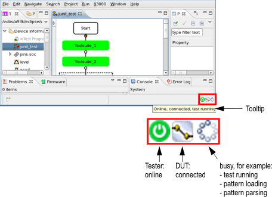
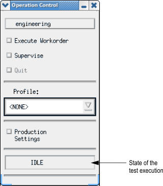
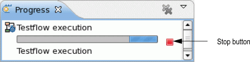

V93000 system status line
The V93000 system state line provides information about the current state of the tester and the DUT connection and the setup or test execution.
Beside the system status line, SmarTest provides further views to inform the user on the current system state, see below paragraph Further information views.
On the system status line in the right bottom corner of SmarTest three icons show the following system states:

Device / function |
Status |
Icon |
|---|---|---|
Tester |
Online |
|
Offline |
||
DUT |
Connected |
|
Disconnected |
||
Setup or test execution |
Busy (loading, parsing, running, etc.) |
|
Idle |
(no icon) |
Functionality of the status line
To display a tooltip describing the system state move the mouse over the corresponding icon.
If a test is running, on the status line click the busy icon to open the Debug view, where you can pause, continue, or stop its execution. For more information, see Single step testflow debugging.
Depending on the testflow, the connection state icon may change.
Further information views
- The Report window provides constant and immediate feedback about what is happening
on the system.
Two lines at the top of this window constantly monitor hardware status and system performance.
- The system console displays errors that are associated with a particular test system resource (test data component).
- The Operation Control window shows the test execution state.

Examples
Generic process
- Load a testflow and start a test execution that takes few minutes.
- On the status line, you may see the busy icon; but on completion of the test execution, it disappears.
- On the status line, you see the icons for the tester and the DUT state only.
You may notice the same behavior of the busy icon when you load all setups of a testflow that references to a large pattern file.
The tooltip describes the current state, for example:
- Online, disconnected, loading
- Online, disconnected, parsing pattern
- Online, disconnected, loading pattern [pattern name] 75%.
Click the busy icon to show the Progress view of the corresponding process.
Terminate the process
- Select the Load [name] progress entry.
- Click the red Stop button.

Functional changes
- Introduced in SmarTest 7.1.0